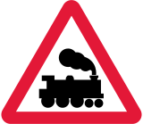

771: Level crossing without barrier or gate ahead
Drawn Drawn from the cited SI diagram (Reviewer-graded OK or awaiting grade).
Level crossing without barrier or gate ahead


| Id | 771 |
|---|---|
| Name | Level crossing without barrier or gate ahead |
| Category | Signs |
| Group | WarnTriangle |
| Diagram | 771 |
| Row status | current |
| SI caption | Railway level crossing without gate or barrier ahead |
| SI ref | Sch 2 Pt 2 |
| Family | WarnTriangle |
| Chapter | 7 |
| Mount | Post |
| Colours | red, white, black |
| Dimensions (m) | plate_height 0.6, plate_width 0.679, post_diameter 0.076, underside 1.5, verge_offset 0.8 |
| OSM tag | traffic_sign=GB:771 |
| Face source | GOV.UK EPS (Crown copyright, OGL v3.0), converted locally by the atlas |
| Diagram ref / source page | SI 2016/362 Sch 2 Pt 2 item 52, diagram 771 (printed p51 = tsrgd2016.pdf PDF p52): black steam locomotive |
| Licence | OGL-3.0 |
- Face: GOV.UK traffic sign image, © Crown copyright (Department for Transport), used under the Open Government Licence v3.0 (https://www.nationalarchives.gov.uk/doc/open-government-licence/version/3/); converted from the EPS by the atlas. The atlas's own procedural face is shown after it as the offline fallback.